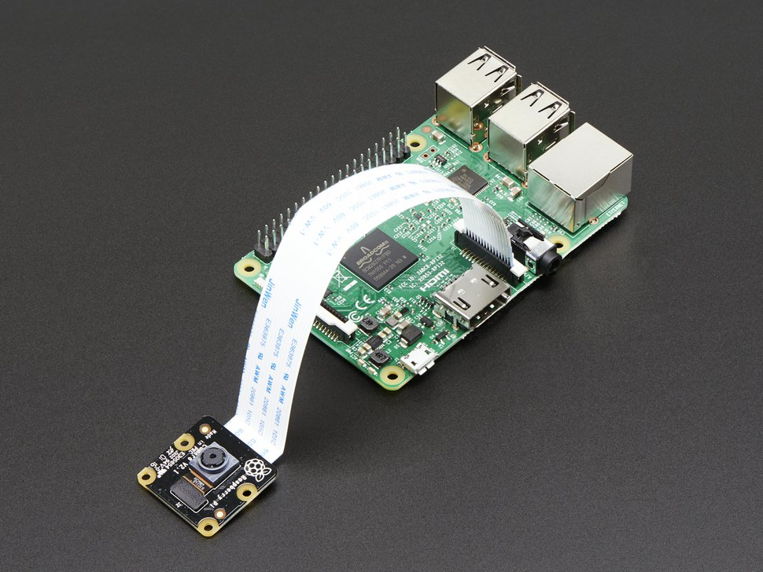
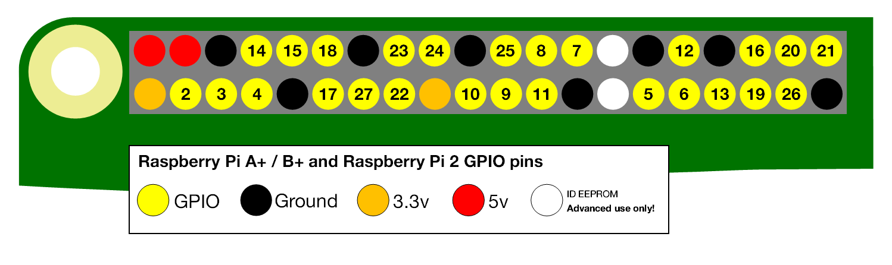
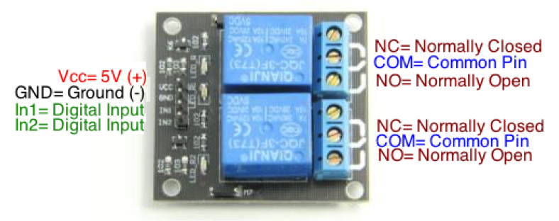

Wiring the system
Camera
It is worth while checking out the specs as they are impressive.
Attach the camera to the Pi with a flat ribbon cable. The cable should have blue tabs on one side of each end. The blue tab goes towards the ethernet port on the Pi and towards the back of the camera (away from the lens). In the picture below, you can't see the blue side of the ribbon as it is toward the ethenret port and towards the back of the camera.

Raspberry Pi B+/2/3 pinout

The image above is a schematic of the layout of the pins on the Raspberry Pi. Each of the yellow numbered pins are digital input/output (DIO) pins. Your free to attach each component to the pin numbers of your choice. Just be sure that the pin numbers specified in the config.json file match the way you wired the system.
Here are all the connections you want to make to set up the homecage system
| Pin from Raspberry | To | Purpose |
|---|---|---|
| 8 | In1 on relay | White LED |
| 7 | In2 on relay | IR LED |
| 5 V | Vcc on relay | Power 5V end of relay switch |
| Ground | GND Relay | Power 5V end of relay switch |
| 9 | DATA pin on DHT sensor | Read temperature/humidity from DHT sensor |
| 5 V | VCC pin on DHT sensor | Power DHT sensor |
| Ground | GND pin on DHT sensor | Power DHT sensor |
5V and ground pins
There are multiple power and ground pins, use these to connect to the relay switch, the temperature sensor, and the light sensor. Conceptually, all the ground pins are the same, you can use a bread-board if you run out of ground pins.
Lights
Use an external 12V AC/DC power supply. - Don't power the lights directly from the 5V pins on the Pi, the Pi does not have anough current. A 1 Amp 12V adapter should be fine, don't worry, if it is under-powered your lights will be a little dim.
Use a relay switch. - Never connect the 12V adapter directly to the Pi, instead use a relay switch. Only work with DC current coming out of the AC/DC adapter, DO NOT work with AC power coming from the wall as it can kill you.
The relay switch effectively separates the 5V, Ground, and DIO on the Pi (left half of the relay) from the 12V power of the AC/DC adapter and the lights (right half of the relay). Here we will wire the system with the white LED on channel 1 and the IR LED on channel 2 of the relay switch.
All LEDs need resistors. - All LEDs need resistors. If your directly connect an LED to power and ground without a resistor you will burn the LED. All LEDs need a resistor wired in parallel, these are called 'current limiting resistor'.
Use IR LEDs <900 nm. - These are within the sensitivity range of the Pi NoIR camera. A lot of IR LEDs are 940nm, these are not well suited for use with the Pi NoIR camera but are designed for IR sensors as is used in a TV remote.

Connect a 12V AC/DC adapter, IR, and white lights to the two-channel relay switch.
All LEDs need resistors!
-
Using a 12V AC/DC adapter (1 Amp), cut the wire and stick the positive 'hot' wire into the center 'common' pin' of channel 1 on the relay switch. The 'hot' end wire usually has a white line down the length of the wire. You can also determine the 'hot' end using a multi-meter, it is the one that gives a positive (not negative) voltage when attached to the positive (normally red) end of the multi-meter.
-
Cut a bit of wire and connect the center 'common pin' of channel 1 to the center 'common pin' of channel 2. This is the 'hot' end.
-
Stick the positive end of the white LED into the 'normally closed' port of channel 1. Attach the negative end of the white LED to the 'ground' wire of the 12V AC/DC adapter.
-
Do the same for the IR LED. Stick the positive end into the 'normally closed' port of channel 2 on the relay switch. Attach the negative end of the IR LED to the 'ground' wire of the 12V AC/DC adapter.
One important concept is that 'all grounds are the same'. This includes the ground on the 12V AC/DC adapter, the ground of the LEDs, the ground of theRaspberry Pi, etc.
Connect the Pi to the relay switch switch
Connect 4 wires from the Pi to the relay switch.
-
Connect a DIO pin from the Pi to the 'In1=Digital Input' pin on the relay switch.
-
Connect a second DIO pin from the Pi to the 'In2=Digital Input' pin on the relay switch.
-
Connect a 5V pin from the Pi to the 'Vcc' pin on the relay switch.
-
Connect a ground pin from the Pi to the 'GND' pin on the relay switch.
DHT 22 temperature sensor
This is powered by the Raspberry Pi. Connect 3 wires from the Pi to the sensor.
-
Connect a 5V pin from the pi to the 'VCC' pin on the sensor.
-
Connect a ground pin from the Pi to the 'GND' pin on the sensor.
-
Connect a DIO pin from the Pi to the 'DATA' pin on the sensor.

Combined visible and IR light sensor
This is powered by the Raspberry Pi. One example is a SI1145 Digital UV Index / IR / Visible Light Sensor. Your on your own to wire this.